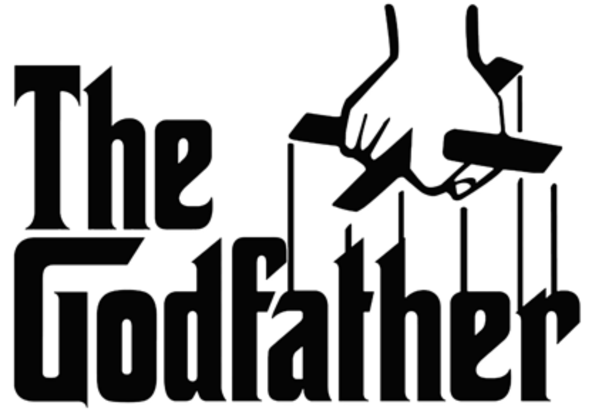

Grandes películas del cine

Desde su estreno, la película "El Padrino" es ampliamente considerada como una de las mejores y más influyentes películas jamás realizadas, especialmente en el género de cine de gánsteres. Fue seleccionada para su conservación en los EE. UU. por el National Film Registry de la Biblioteca del Congreso de Estados Unidos en 1990, al ser considerada "cultural, histórica o estéticamente significativo" y se clasifica como segunda mejor película del cine estadounidense por el American Film Institute. Es continuada por su secuelas El Padrino II (1974) y El Padrino III (1990).
Además del ámbito cinematográfico, la franquicia incluye una amplia variedad de productos tales como novelas, series de televisión, videojuegos, historietas, atracciones de parques temáticos, juegos de rol, de guerra o de miniaturas y juguetes, que componen una parte importante del conocido como «universo expandido» de Star Wars. Cada año la marca genera unos ingresos por la venta de sus productos en todo el mundo que ascienden a más de 24 mil millones USD, lo que la convierte en una de las más exitosas de todos los tiempos, mientras que la recaudación de sus películas la posicionan como una de las series más taquilleras en la historia del cine.

Un éxito entre la crítica, Citizen Kane fracasó en recuperar su costo en la taquilla. La película cayó en el olvido poco después, pero su reputación mejoró, primero, con la crítica francesa y, sobre todo, después de su reestreno estadounidense en 1956. Hay un cierto consenso entre la crítica de que Citizen Kane es la mejor película que se ha rodado, lo que ha llevado a Roger Ebert a decir: «Está decidido: Citizen Kane es, oficialmente, la mejor película de la historia». Encabezó la lista AFI's 100 años... 100 películas, elaborada en 1998, y su actualización del año 2007 con motivo del décimo aniversario. También lideró todas las votaciones de la revista Sight & Sound de las diez mejores películas durante casi medio siglo.